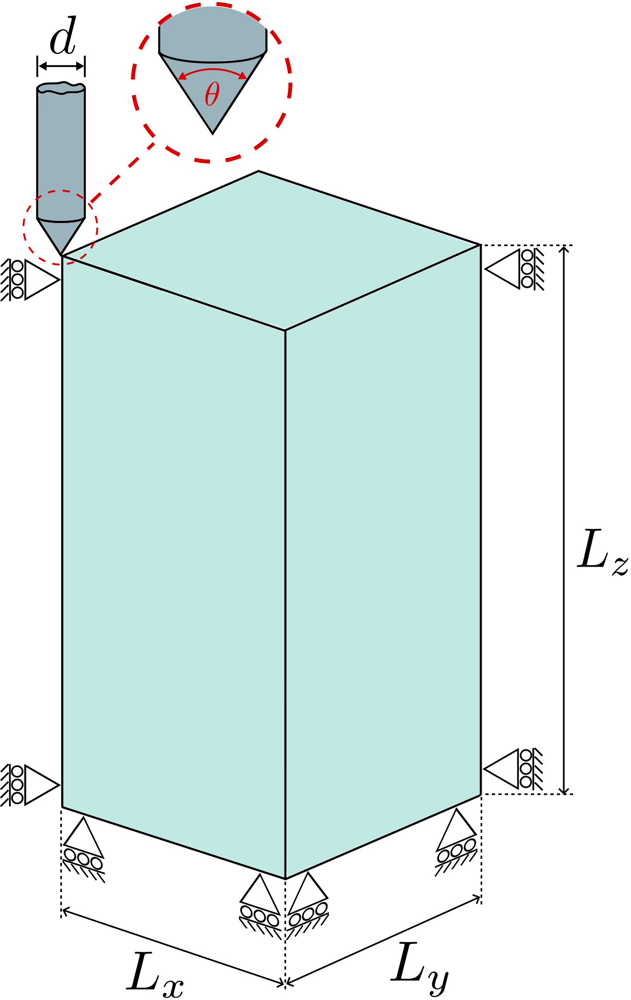
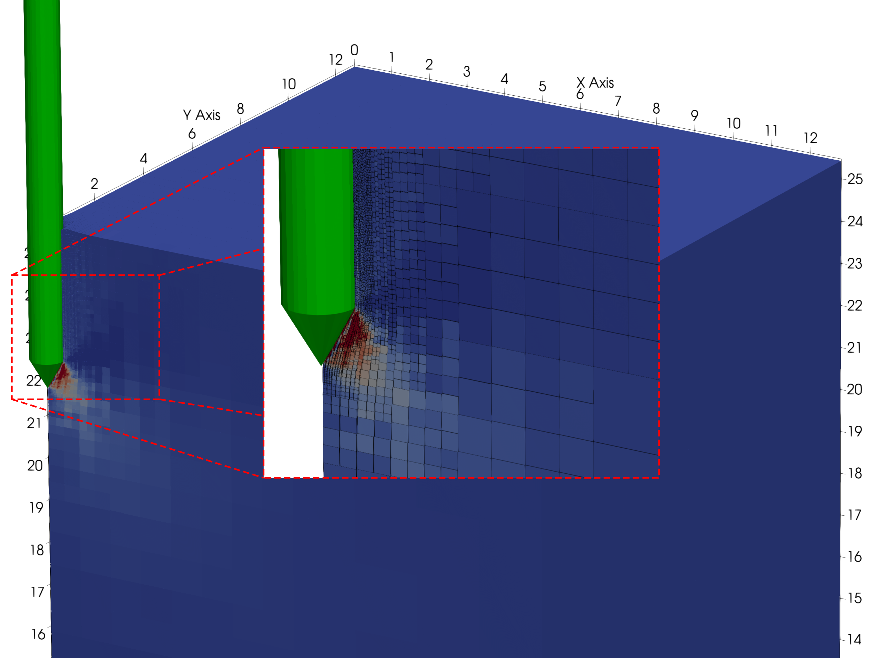
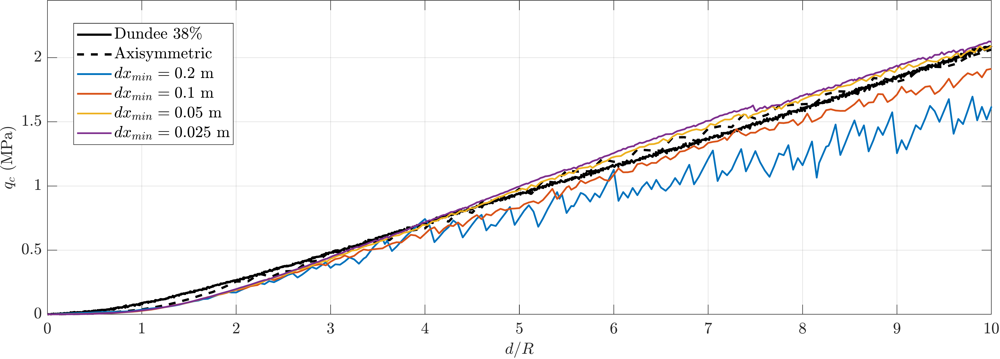

Tutorial 3: Vertical penetration (Cone Penetration Test)¶
Introduction¶
This tutorial walks through a Cone Penetration Test (CPT) simulation, a workhorse problem in offshore geotechnical engineering that calibrates soil parameters against in-situ measurements.
The problem is the quasi-static penetration of a rigid cone into a dry sand bed, with the cone-tip resistance compared against experimental centrifuge data from Davidson et al. 1 and Cerfontaine et al. 2. It exercises adaptive octree refinement around a moving rigid body, frictional contact, and a hyperelastic-perfectly plastic constitutive model.
This tutorial has four sections:
Problem description¶
You will define the geometry, mesh, boundary conditions, material, rigid body and solver in the input file. All the inputs to the simulation are defined using the input_data.json file format.
Only a quarter of the domain is modelled, exploiting the two-fold symmetry of the CPT in the \(xz\) and \(yz\) planes. The cone is pushed \(4\) m into the sand over 300 quasi-static load steps. The deformation is large enough that GIMPs traverse multiple octree levels around the cone tip.

Figure reproduced from 3.
Mesh: Domain dimensions \(L_x = L_y = 12.8\) m and \(L_z = 24.6\) m, with only a quarter modelled by symmetry. Adaptive octree refinement is driven by the rigid body position. The smallest element size near the cone surface is \(dx_{\min}\), and the surrounding "buffer" region uses elements of size \(2\, dx_{\min}\). For a quick first run set \(dx_{\min} = 0.1\) m; for a high-accuracy comparison against the experimental data drop to \(dx_{\min} = 0.05\) m.
Initial GIMP distribution: \(2\times2\times2\) material points within each element, filling the entire soil domain.
Boundary conditions: Roller boundaries on the two symmetry planes (\(-x\) and \(-y\)), on the two remaining lateral faces (\(+x\) and \(+y\)) and on the base (\(-z\)). The top face (\(+z\)) is left as a free surface (homogeneous Neumann). Every node has its \(x\) and \(y\) degrees of freedom unconstrained on the symmetry planes by the roller condition, so the cone tip can drive vertical settlement freely.
Material: Use a Hencky hyperelastic-perfectly plastic model with a Willam-Warnke deviatoric yield surface and a non-associated Drucker-Prager flow potential. The properties below are calibrated to a relative density of \(R_D = 32\%\) via the Brinkgreve empirical correlations 4, following the procedure originally established in 5: reference Young's modulus \(E^{ref}_{50} = 19\,200\) kPa, density \(\rho = 16.3\) kN/m\(^3\), Poisson's ratio \(\nu = 0.25\), friction angle \(\phi = 32^\circ\), dilation angle \(\psi = 2^\circ\), apparent cohesion \(c = 0.3\) kPa, earth pressure coefficient at rest \(K_0 = 0.47\) and stiffness exponent \(m_E = 0.60\).
The Young's modulus varies with confining pressure but is fixed at each material point's initial position:
where \(d_p^0\) is the GIMP's initial depth below the surface. The \(E_{50}\) value does not evolve during the simulation.
Rigid body: A circular cone of radius \(r = 0.4\) m and apex angle \(\theta = 60^\circ\), with its tip initially positioned just above the soil surface. The coefficient of friction between the cone and soil is \(\mu = 0.3\). The normal and tangential contact penalty parameters are
as in Tutorial 2 and in Bird et al. 6.
Loading: A two-stage pseudo-static solution:
- Stage 1 - gravity: Apply gravitational body force in a single load step, populating the initial stress field and the depth-dependent \(E_{50}\) at every GIMP.
- Stage 2 - cone descent: Prescribe a downward displacement of the cone of \(\Delta z = -4\) m over 300 load steps.
Solver: Newton-Raphson, quasi-static (pseudo-static), with the two-stage loading above.
Input setup¶
The input file is a single JSON object - a human-readable, editable text file. The complete file for this problem can be found here.
This problem has eight top-level sections, broken out below alongside the Problem description.
Defaults (a face being free, a DOF being unconstrained, etc.) are not included in the file; only non-default settings are specified. See the input_data.json file format for the full list of defaults.
input_data.jsonMesh data¶
The quarter-symmetric domain matches the \(12.8 \times 12.8 \times 24.6\) m setup, with refinement driven by the rigid body.
dx refined is the smallest element size, used on elements intersecting the cone surface. buffer multiplier sets the element size in the surrounding region as a multiple of dx refined.
Refinement type is rigid body adaptive so the mesh re-refines as the cone descends.
Initial GIMP distribution¶
The default \(2\times2\times2\) distribution per element, filling the soil domain.
Boundary conditions¶
Rollers on the symmetry planes (\(-x\), \(-y\)), the remaining lateral faces (\(+x\), \(+y\)) and the base (\(-z\)). The top face is left as a free surface (default).
Material¶
A single layer of hyperelastic-perfectly plastic sand, calibrated to \(R_D = 32\%\) Congleton sand via the Brinkgreve correlations.
Rigid body¶
A cone with radius \(0.4\) m and apex angle \(60^\circ\), initially positioned just above the soil surface, given a prescribed downward displacement of \(4\) m over the 300 load steps of step 2.
Loading¶
The two stages are processed in order: a single gravity step generates the initial stress field, then the cone is displaced over 300 load steps.
Solver¶
Newton-Raphson, quasi-static. The same solver is applied to both stages.
Deploying and running the problem¶
Viewing the results¶
The deformed mesh and GIMP displacement field at \(1.2\) m penetration is shown below: the displacement magnitude rises from \(0\) m (blue) at the far field to roughly \(0.5\) m (red) immediately under the cone tip.

Figure reproduced from 3.
The cone-tip resistance \(q_c\) is normalised by the cone radius \(r\) to compare against the centrifuge measurements of Davidson et al. 1 and Cerfontaine et al. 2. Convergence with mesh refinement is monitored by halving \(dx_{\min}\).

Figure reproduced from 3.
-
C. Davidson, M. Brown, B. Cerfontaine, J. Knappett, A. Brennan, T. Al-Baghdadi, C.E. Augarde, W.M. Coombs, L. Wang, A. Blake, D. Richards, and J.D. Ball. Physical modelling to demonstrate the feasibility of screw piles for offshore jacket supported wind energy structures. Géotechnique, 72(2):108–126, 2022. ↩↩
-
B. Cerfontaine, J. Knappett, M.J. Brown, C. Davidson, and Y. Sharif. Optimised design of screw anchors in tension in sand for renewable energy applications. Ocean Engineering, 217:108010, 2020. ↩↩
-
Robert E. Bird, William M. Coombs, Charles E. Augarde, Giuliano Pretti, and Ted J. O'Hare. An implicit octree-based adaptive material point method. 2026. URL: https://arxiv.org/abs/2606.09275, arXiv:2606.09275. ↩↩↩
-
R.B.J. Brinkgreve, E. Engin, and H.K. Engin. Validation of empirical formulas to derive model parameters for sands. In Numerical Methods in Geotechnical Engineering, pages 137–142. CRC Press, 2010. ↩
-
Robert E. Bird, William M. Coombs, Michael J. Brown, Charles E. Augarde, Yaseen U. Sharif, Giuliano Pretti, Catriona Macdonald, Duncan Stevens, and Gareth Carter. Three-dimensional modelling of drag anchor penetration using the material point method. Ocean Engineering, 358:125456, 2026. ↩
-
Robert E. Bird, Giuliano Pretti, William M. Coombs, Charles E. Augarde, Yaseen U. Sharif, Michael J. Brown, Gareth Carter, Catriona Macdonald, and Kirstin Johnson. A dynamic implicit 3D material point-to-rigid body contact approach for large deformation analysis. International Journal for Numerical Methods in Engineering, 2025. ↩